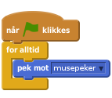
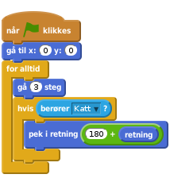
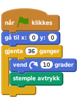
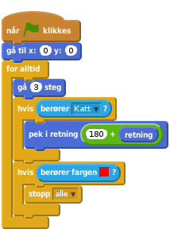
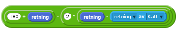
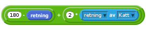
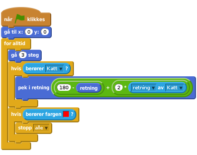
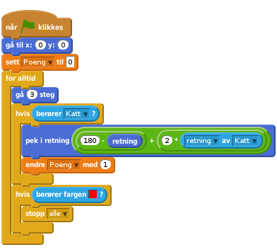
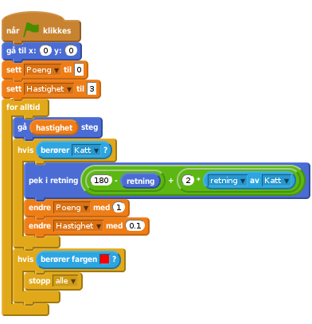

Scratch
Soloball
Vi skal nå lære hvordan vi kan lage et enkelt ballspill med Scratch. I soloball skal du prøve å holde ballen i bevegelse, men slik at den ikke går i nettet.

Vi begynner med å se på hvordan vi kan få kattefiguren til å rotere.
Start et nytt Scratch-prosjekt. Du vil se en kattefigur midt på scenen.
Pusle sammen de følgende klossene i skriptområdet til høyre på skjermen.

Dette er et eksempel på et lite program, eller skript som det kalles i Scratch.
Klikk på det grønne flagget.
For å starte programmet du nettopp puslet sammen kan du klikke på det grønne flagget over scenen.
Begynner katten å rotere rundt slik at den alltid ser mot musepekeren?
For å stoppe programmet ditt kan du klikke på den røde åttekanten ved siden av det grønne flagget.
I stedet for at katten roterer vil vi at den skal kunne løpe rundt i sirkel på skjermen.
Vi skal nå gjøre et lite triks hvor vi flytter katten vekk fra sentrum slik at det ser ut som om den løper i sirkel i stedet for å rotere.
Gi først kattefiguren din navnet Katt. Dette gjør du ved å først klikke på den lille ien på kattefiguren under scenen. Deretter kan du skrive Katt i tekstfeltet. Når du går tilbake, <, ser du at figuren har fått det riktige navnet.
Klikk på Drakter-fanen øverst på skjermen. Du vil nå se to kattefigurer. Slett en av dem ved å klikke på den lille x-en i hjørnet av figuren.
Vi skal nå gjøre flere ting. Vi vil lage kattefiguren mindre, snu den 90 grader og flytte den vekk fra sentrum.
Gjør katten mindre ved å klikke på den i det store bildet, og deretter dra i et av hjørnene.

Roter deretter katten ved å dra i den lille rundingen over katten.

Til slutt kan du ta tak i kattefiguren ved å klikke på den lille rundingen midt på katten. Flytt den et stykke til siden. Følg med på scenen øverst til venstre at du ikke drar den av skjermen.

Klikk på det grønne flagget.
Start programmet ditt igjen. Flytter katten seg i sirkel når du beveger musepekeren?
Fungerer bevegelsen bra? Ser katten passe stor ut? Husk at du kan gå tilbake og endre på kattefiguren senere hvis du oppdager noe som kunne vært bedre.
Selv om ikke endret programmet vårt oppfører katten seg veldig annerledes. Skjønner du hvorfor?
Når vi sier at katten skal peke mot musepekeren må den rotere rundt et punkt. Dette punktet kalles senterpunktet til figuren, og du kan se (og endre) senterpunktet til en figur ved å klikke på  øverst til høyre på skjermen.
øverst til høyre på skjermen.
Når vi flytter senterpunktet utenfor katten vil det se ut som om katten løper rundt dette punktet i stedet for at den bare roterer uten å flytte seg.
Nå skal vi lage en ballfigur, og få den til å sprette rundt på skjermen.
Klikk på Skript-fanen slik at du ser skriptet du skrev tidligere.
Klikk på  for å hente en ny figur.
for å hente en ny figur.
Hvis du klikker kategorien Ting til venstre på skjermen vil du se flere baller. Velg en av dem.
Vi skal nå se en annen måte å gjøre figurer mindre på. Klikk  øverst på skjermen. Klikk deretter på ballfiguren noen ganger slik at den er passe stor i forhold til katten.
øverst på skjermen. Klikk deretter på ballfiguren noen ganger slik at den er passe stor i forhold til katten.
Nå lager vi et program for ballen. Vi vil at ballen skal starte midt på skjermen. Deretter går den inn i en løkke hvor den flytter seg litt, og snur om katten kommer borti den.

Klikk på det grønne flagget.
Beveger ballen seg? Snur den når katten kommer borti den?
Hva skjer om ballen flyr forbi katten?
Starter ballen midt på skjermen igjen hvis du trykker på det grønne flagget en gang til?
Vi skal nå lage et nett som kan fange ballen hvis den flyr forbi katten.
Vi skal nå lage en figur som vi tegner selv. For å gjøre dette klikker du  ved siden av
ved siden av Ny figur under scenen.
Klikk på Bytt til vektorgrafikk nederst til høyre på skjermen.
Velg en godt synlig farge, for eksempel rød, og klikk på linje-verktøyet på høyre side av skjermen.
Tegn en liten loddrett strek til høyre på figuren din. Hold gjerne inne Skift-knappen, da får du en helt loddrett strek.

Klikk på Skript-fanen.
Vi skal nå tegne et sirkelformet nett ved å stemple denne figuren på bakgrunnen. Lag det følgende skriptet:

Klikk på det grønne flagget.
Tegnes det en sirkel på bakgrunnen når spillet starter?
Det kan hende du må flytte litt på katt- og nett-figuren for at de skal passe sammen. Vi vil at det skal se ut omtrent som på bildet i begynnelsen av denne oppgaven.
Skjer det noe når ballen treffer nettet?
Vi vil at ballen skal stoppe når den treffer nettet.
Foreløbig har vi ikke laget noe kode som forteller ballen at den har truffet nettet. Det skal vi gjøre nå.
Klikk på ball-figuren, slik at du ser skriptet vi tidligere lagde for denne.
Vi skal nå bruke berører fargen{-blocklightblue}-klossen for å oppdage at ballen treffer nettet. Legg til nye klosser i skriptet ditt slik at det blir seende slik ut:

For å få riktig farge i berører fargen`{.blocklightblue}-klossen klikker du først på den lille firkanten hvor fargen vises. Deretter flytter du musepekeren slik at den peker på nettet. Da forandres fargen i den lille firkanten. Klikk igjen for å velge denne fargen.
Klikk på det grønne flagget.
Stopper ballen når den kommer til nettet?
Med stopp alle-klossen stoppes hele spillet når ballen treffer nettet. For å spille videre må du klikke det grønne flagget igjen.
Nå spretter ballen bare fram og tilbake på samme linje hele tiden. Vi vil at den skal sprette litt mer naturlig på katten.
En bra modell for hvordan en ball spretter er at vinkelen ut er den samme som vinkelen inn.

I spillet er det to retninger vi må tenke på, retningen til ballen og retningen kattefiguren står i.

Så langt har vi brukt

for at ballen skal snu. I figuren ser vi at dette betyr at ballen spretter tilbake der den kom i fra.
Vi bør også kompensere for retningen til Katt. Dette kan vi gjøre ved å trekke fra to ganger (retning - retning av katt). Det vil si

Vi kan forenkle dette til

Endre i skriptet til ballen slik at spretten blir bedre,

Klikk på det grønne flagget.
Vi har nå laget et ganske morsomt spill! Hvis du vil kan du gå videre med de neste stegene for å gjøre spillet enda litt mer spennende.
For å lagre spillet ditt kan du velge Lagre nå i Fil-menyen. Spillet blir da lagret på brukerkontoen ditt hos Scratch. Om du ikke har laget deg brukerkonto kan du velge Last ned til datamaskinen i stedet.
Om du lagrer spillet på brukerkontoen din kan du også legge det ut slik at andre kan spille det. For å gjøre dette klikker du Legg ut øverst til høyre. Du kan deretter dele nettadressen til spillet ditt med venner og familie.
Alle spill blir morsommere når man får poeng!
For å telle poeng skal vi bruke noe som kalles en variabel. En variabel er et navn på en verdi som kan variere.
Klikk på Data-kategorien og deretter på Lag en Variabel.
Gi variabelen navnet Poeng, og la den gjelde for all figurer. Legg merke til at når du klikker OK dukker det opp en boks som heter Poeng på scenen, og flere nye klosser under Lag en Variabel.
Vi vil nå at Poeng skal settes til 0 når spillet starter. Deretter skal vi få 1 poeng hver gang vi returnerer ballen.
Legg på to nye klosser i skriptet som styrer ballen:

Vi skal nå lage spillet vanskeligere etterhvert som tiden går, ved å øke hastigheten på ballen.
Hastigheten på ballen styres av klossen
Ved å endre på 3-tallet endrer vi hastigheten på ballen. Prøv dette selv!
For å endre hastigheten underveis i spillet trenger vi en ny variabel. Lag en ny variable som du kaller Hastighet. Du kan la denne gjelde kun for denne figuren.
Hastigheten er ikke så interessant å vise på scenen. Du kan skjule boksen på scenen ved å fjerne avhukingen ved siden av Hastighet.

Vi vil nå sette hastigheten til 3 (du kan bruke et annet tall om du vil) når spillet starter. Deretter vil vi øke denne littegrann hver gang katten berører ballen. Dette gjør vi på samme måte som når vi teller poeng.

Pass på at du også endrer gå steg-klossen.
Du har sikkert opplevd at katten av og til "fanger" ballen. Vi skal nå fikse slik at den ikke gjør det.
Av og til virker det som om katten "fanger" ballen. Dette skjer fordi ballen ikke flytter seg langt nok etter at den har snudd. Den fortsetter å berøre katten og blir derfor snudd igjen ... og igjen ... og igjen.
Flytt, kun gjelde for denne figuren, og heller ikke vises på scenen.Flytt-variabelen vil vi bruke til å telle hvor mange flytt ballen har gjort siden den sist berørte katten. Deretter kan vi si at ballen skal snu kun hvis den har flyttet en del siden den sist snudde.
Utvid skriptet ditt som under. Legg spesielt merke til at hvis-testen har blitt utvidet.
![når grønt flagg klikkes
gå til x: (0) y: (0)
sett [Poeng v] til [0]
sett [Hastighet v] til [3]
for alltid
gå (hastighet) steg
endre [Flytt v] med (1)
hvis ((berører [Katt v] ?) og ((Flytt) > (20)))
pek i retning (((180) - (retning)) + ((2) * ([retning v] av [Katt v])))
endre [Poeng v] med (1)
endre [Hastighet v] med (0.1)
sett [Flytt v] til (0)
slutt
hvis (berører fargen [#ff0000] ?)
stopp [alle v]
slutt
slutt](024fa528c5fd381e168154021339cf77e8bc6a0a.png)
I disse ekstrastegene har vi sett på noen måter vi kan gjøre spillet bedre og mer spennende på. Her er noen flere ideer:
Prøv å legg på lyder, for eksempel når katten berører ballen eller når ballen treffer nettet. Se på de forskjellige klossene i Lyder.{blockpink}-kategorien, og lydene som finnes under Lyder-fanen.
Du kan gjøre spillet mye vanskeligere ved å lage en ekstra ball! Prøv for eksempel og lag en ny ballfigur, og kopier skriptet fra den første ballen. Du må passe på ingen av ballene inneholder samme farge som nettet.
Det finnes mange andre ting å prøve også. Du bestemmer!